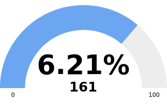
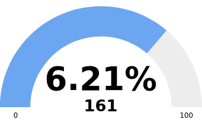

# Getting Started
Chart.js (opens new window) v3 extension for creating solid gauge charts.

# Installation
# npm
 (opens new window)
(opens new window)  (opens new window)
(opens new window)
> npm install chartjs-chart-solidgauge
# yarn
> yarn add chartjs-chart-solidgauge
Chart.js (opens new window) v3 extension for creating solid gauge charts.

(opens new window) (opens new window)
> npm install chartjs-chart-solidgauge
> yarn add chartjs-chart-solidgauge